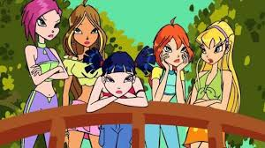

winxs
Liderado pela Bloom, a mais poderosa das Winx, o grupo tambem e composto por Stella, uma princesa sempre otimista; Flora, gentil e carinhosa; Aisha, destemida e decidida; Musa, com seu talento musical; e Tecna, com sua magia tecnologica
A historia de Winx Club e sobre um grupo de fadas que se conhecem em um internato magico e lutam para salvar o universo
